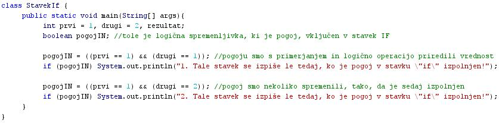
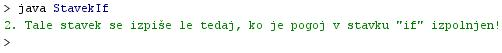

POGOJNI STAVEK IF
- Pogojni stavek "if" je stavek, s katerim lahko doloèene stavke v programu izvedemo ali pa ne izvedemo.
- Doloèeni stavki v programu se lahko izvedejo s pomoèjo stavka "if" le tedaj, ko je izpolnjen doloèen pogoj.
- Ta pogoj je vkljuèen v stavek "if" in je logièna spremenljivka podatkovnega tipa boolean.
- Pogoj lahko torej zavzame dve vrednosti: "true" (resnièno, pravilno, 1) ali "false" (neresnièno, nepravilno, 0).
- Pogoj v stavku "if" je pogosto zapisan kot logièni izraz, ki vsebuje primerjalne operatorje, ali pa je zapisan kot logièna spremenljivka.
- Èe je pogoj, vkljuèen v stavek "if", izpolnjen, se stavek, ki je tudi del stavka "if", izvrši.
- Èe pogoj, vkljuèen v stavek "if", ni izpolnjen, se stavek, ki je tudi del stavka "if", ne izvrši. Izvajanje programa se nadaljuje s stavkom, ki sledi stavku "if".
- Po domaèe bi lahko delovanje stavka "if" opisali takole: Èe je postavljeni pogoj izpolnjen, izvedi stavek, ki je vkljuèen v stavek "if", èe pa pogoj ni izpolnjen, ne naredi nièesar, temveè le nadaljuj izvajanje programa s tavkom, ki sledi stavku "if".
- Prav v stavku "if" se najpogosteje pokaže potreba po uporabi sestavljenega stavka ali bloka ukazov.
- Pogostokrat si namreè želimo, da se v primeru izpolnjenega postavljenega pogoja izvede veè opravil, kar terja veè stavkov.
- Sintaksa stavka "if" pa dovoljuje vkljuèitev le enega stavka v stavek "if".
- Rešitev je torej uporaba zavitih oklepajev, med katera lahko vkljuèimo veè stavkov.
- Prevajalnik razume stavke med zavitima oklepajema kot en sam stavek.
- Gre torej za sestavljeni stavek ali blok stavkov oziroma blok ukazov.
VAJA 19:
- V okolju za pisanje izvorne kode v jeziku Java, za prevajanje in za interaktivno delo zapiši zgornji program "StavekIf". Pomagaj si s sliko.
- Kodo lahko tudi kopiraš iz te datoteke in jo prilepiš v okolje, v katerem pišeš programèke. Pozor: koda, ki jo boš kopiral/a, vsebuje eno, dve, tri ali štiri napake. Èe želiš, da bo program deloval, moraš napake odkriti in jih odpraviti.
- Izvorno kodo shrani pod imenom "ImePriimek19.java". ImePriimek je seveda tvoje lastno ime in priimek.
- Datoteko "ImePriimek19.java" prevedi.
- Prevedeno datoteko zaženi, preveri rezultat v interaktivnem oknu in poklièi profesorja, da vidi rezultat.
1. Vprašanja:
1. Kaj lahko dosežemo z uporabo stavka "if"?
2. Kdaj se stavek, ki je vkljuèen v stavek "if" dejansko izvede?
3. Kdaj se stavek, ki je vkljuèen v stavek "if" ne izvede?
4. Kakšna oziroma kakšnega tipa spremenljivka je pogoj v stavku "if"?
5. Kako smo poimenovali spremenljivko, ki smo jo vkljuèili kot pogoj v stavek "if" v primeru te uène enote?
6. V zvezek prepiši izraz v primeru teuène enote, kjer smo izraèunali in priredili vrednost spremenljivki, ki je pogoj stavka "if".
7. Kateri primerjalni operator smo uporabili pri doloèitvi vrednosti pogoja v primeru te uène enote?
8. Kateri logièni operator smo uporabili pri doloèitvi vrednosti pogoja v primeru te uène enote?
9. Koliko "if" stavkov smo vkljuèili v primer te uène enote?
10. Koliko stavkov vsebujejo "if" stavki v primeru te uène enote?
11. Smo v primeru te uène enote uporabili tudi bloke ukazov?
12. Koliko stavkov se ob zagonu programa v tej uèni enoti dejansko izpiše?
13. Zakaj se nekateri stavki izpišejo, nekateri pa ne?
2. Zapiši od ene do pet kljuènih besed, ki povzemajo vsebino te uène enote.
3. Povezave do dodatnih informacij.
Gradiva na spletnih straneh fakultete za matematiko in fiziko v Ljubljani.
Spletni priroènik proizvajalca programskega okolja Java. To je podjetje Sun.
|